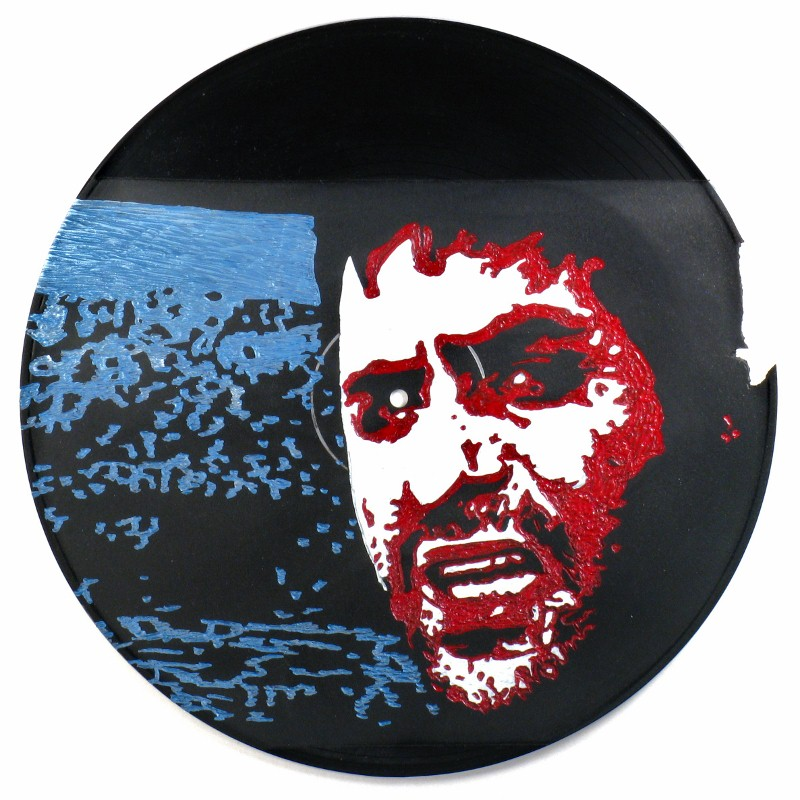
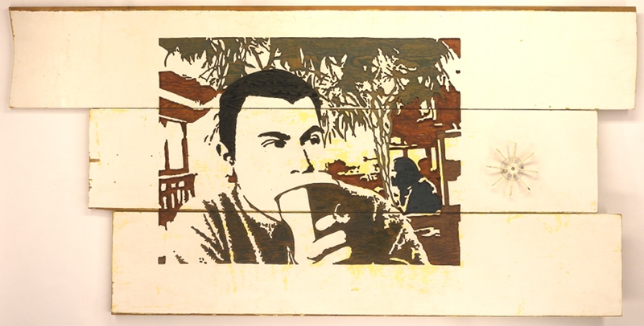
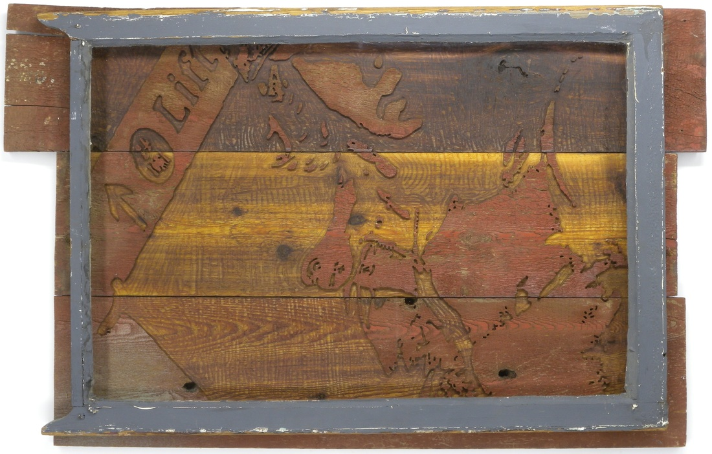
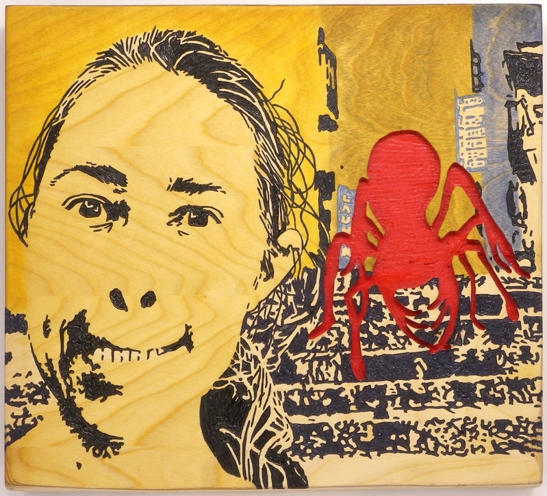

Lady at the Drugstore - Painted Relief Carving - 22 X 27 - 2007
Lady at the Drugstore - Painted Relief Carving - 22 X 27 - 2007
![picture of carving entitled A Man Who Has Forgotten the Words [Wang Yang Zhi Ren]](../images/portraits/A Man Who Has Forgotten the Words.jpg) A Man Who Has Forgotten the Words [Wang Yang Zhi Ren] - Painted Relief Carving - 32 X 27 - 2008
A Man Who Has Forgotten the Words [Wang Yang Zhi Ren] - Painted Relief Carving - 32 X 27 - 2008

Mouthman - Painted Relief Carving - 12 inch circle - 2010

Vigilance [Tom, earlier this century] - Painted Relief Carving - 69 X 34 - 2008

Lift - Painted Relief Carving - 47 X 30 - 2007
 Waiting for the Barn Dance - Painted Relief Carving - 16 X 24 - 2007
Waiting for the Barn Dance - Painted Relief Carving - 16 X 24 - 2007
 Chianti and the Modern Woman - Painted Relief Carving - 12 X 27 - 2007
Chianti and the Modern Woman - Painted Relief Carving - 12 X 27 - 2007
 Good Time Charlie - Painted Relief Carving - 12 X 12 - 2011
Good Time Charlie - Painted Relief Carving - 12 X 12 - 2011

Underbite - Painted Relief Carving - 19 X 17 - 2011


![picture of carving entitled Notes from the Dream Stream [Meng Xi Bi Tan]](../images/nature/Notes from the Dream Stream.jpg)